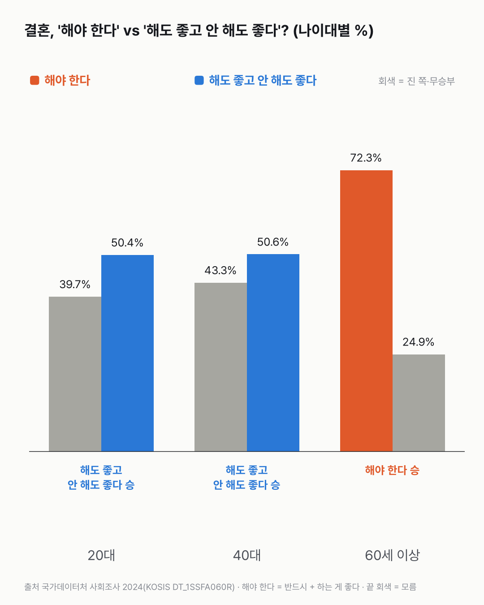
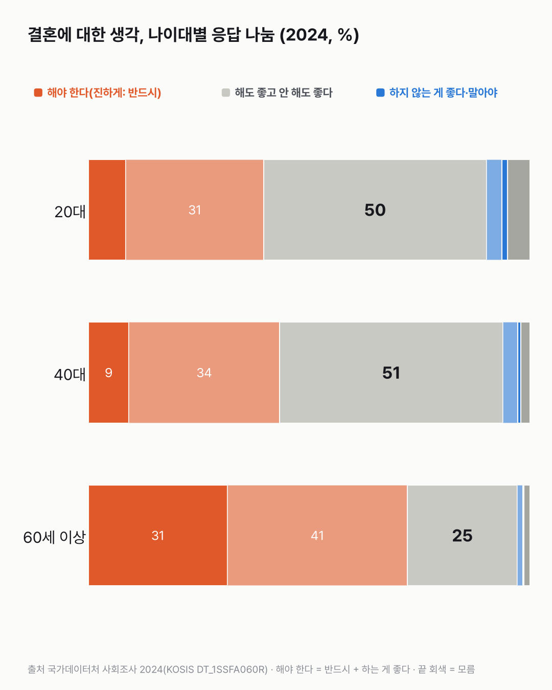

결혼, '해야 한다' vs '해도 그만'? 나이대별로 더 많이 고른 쪽은
명절 밥상에서 자주 오가는 이야기예요. 나이대마다 답이 같을지 다를지, 더 많은 사람이 어느 쪽을 골랐을지 먼저 골라 주세요.
독자 투표
결혼, '해야 한다' vs '해도 좋고 안 해도 좋다', 더 많은 사람이 고른 쪽은?
3줄 요약
- 결혼을 '해야 한다'는 사람과 '해도 좋고 안 해도 좋다'는 사람, 더 많은 쪽은 어디일까요?
- 국가데이터처 사회조사(2024)의 응답 비율로 20대, 40대, 60세 이상 세 나이대를 같은 잣대로 견줘요.
- 비율이 1.1배 이상 차이 나야 승부가 나요. 아니면 무승부예요.
조건과 규칙
- 자료: 국가데이터처 사회조사 '결혼에 대한 견해'(2024, 13세 이상), 응답 비율(%).
- 해야 한다: '반드시 해야 한다' + '하는 것이 좋다'.
- 해도 그만: '해도 좋고 하지 않아도 좋다'.
- '하지 않는 것이 좋다', '하지 말아야 한다', '잘 모르겠다'는 어느 쪽에도 넣지 않았어요.
- 세 판: 20대, 40대, 60세 이상.
- 판정: 그 나이대에서 비율이 큰 쪽이 이겨요. 큰 쪽 ÷ 작은 쪽이 1.1배 미만이면 무승부예요(표본조사라 작은 차이는 가르지 않아요).
- 주의: 어느 답이 옳은지는 다루지 않아요. 응답 비율만 견줘요.
- 이 규칙은 값을 보기 전에 정했어요.
결과 요약
'해도 그만' 2:1 → 그런데 60세 이상에서는 '해야 한다'가 크게 이겨요
- 20대: 해야 한다 39.7%, 해도 그만 50.4%로 '해도 그만' 승(1.27배).
- 40대: 해야 한다 43.3%, 해도 그만 50.6%로 '해도 그만' 승(1.17배).
- 60세 이상: 해야 한다 72.3%, 해도 그만 24.9%로 '해야 한다' 승(2.90배).
그래서? 20대와 40대는 '해도 그만'이 절반을 조금 넘어 이겼고, 60세 이상은 '해야 한다'가 10명 중 7명 남짓으로 이겼어요. 같은 질문에 나이대에 따라 이기는 쪽이 바뀌어요. 왜 그렇게 답했는지는 이 표로 알 수 없어요.
독자 예상 vs 데이터 결과
결혼, '해야 한다' vs '해도 좋고 안 해도 좋다', 더 많은 사람이 고른 쪽은?
데이터로 보면 해도 그만. 사회조사(2024)에서 20대 39.7% vs 50.4%, 40대 43.3% vs 50.6%로 '해도 그만'이 이기고, 60세 이상은 72.3% vs 24.9%로 '해야 한다'가 이겨요. '해도 그만' 2:1이에요.


| 판 | 해야 한다 | 해도 그만 | 배수 | 승 |
|---|---|---|---|---|
| 1. 20대 | 39.7% | 50.4% | 1.27배 | 해도 그만 |
| 2. 40대 | 43.3% | 50.6% | 1.17배 | 해도 그만 |
| 3. 60세 이상 | 72.3% | 24.9% | 2.90배 | 해야 한다 |
| 최종 | 해도 그만 2:1 |
1. 20대: 해야 한다 39.7% vs 해도 그만 50.4%
20대는 둘 중 '해도 그만'이 더 많아요. '반드시 해야 한다'는 8.5%이고, 나머지 31.2%는 '하는 것이 좋다'예요. '하지 않는 것이 좋다'와 '하지 말아야 한다'는 합쳐 4.8%예요.
2. 40대: 해야 한다 43.3% vs 해도 그만 50.6%
40대도 '해도 그만'이 이겼지만, 세 판 중 차이가 가장 작아요(1.17배). '해도 그만'의 비율은 20대(50.4%)와 거의 같아요.
3. 60세 이상: 해야 한다 72.3% vs 해도 그만 24.9%
60세 이상은 '해야 한다'가 '해도 그만'의 2.90배예요. '반드시 해야 한다'만 31.5%로, 20대(8.5%)의 3.7배예요.
응답 전체를 펼쳐 보면
'결혼을 하지 않는 게 좋다'거나 '하지 말아야 한다'는 답은 어느 나이대에서도 5%를 넘지 않아요(20대 4.8%, 40대 4.0%, 60세 이상 1.4%). 그러니 이 대결은 '하자 vs 말자'가 아니라, '해야 한다'와 '해도 되고 안 해도 된다' 사이의 차이예요.


13세 이상 전체로는
13세 이상 전체에서 '해야 한다'는 2012년 62.7%에서 2018년 48.1%로 줄었다가, 2024년 52.5%예요. '해도 그만'은 같은 해 33.6%, 46.6%, 41.5%예요. 한 방향으로만 움직이지 않았어요. 미혼 남녀의 답은 10월 글에서 따로 봤어요.
숫자를 다시 보며
나이대 차이는 같은 해에 다른 나이의 사람들이 한 답이에요. 20대가 나이 들면 60세 이상처럼 답한다는 뜻은 아니에요. 여러분은 어느 쪽인가요?
이 숫자는 어디서 왔나요
출처
기준일 2024년 사회조사 값이에요(2년마다 조사). KOSIS 값은 2026년 11월 14일에 받았어요.
국가데이터처사회조사
- 결혼에 대한 견해KOSIS DT_1SSFA060R원본 보기
세 판, 응답 나눔, 전체 흐름
어떻게 셌나요
- 자료: 국가데이터처 「사회조사」 결혼에 대한 견해(KOSIS DT_1SSFA060R), 2024년, 13세 이상, 나이대별 응답 비율(%).
- 묶기: '해야 한다' = 반드시 해야 한다 + 하는 것이 좋다. '해도 그만' = 해도 좋고 하지 않아도 좋다.
- 판정: 큰 쪽 ÷ 작은 쪽이 1.1배 이상이면 승, 미만이면 무승부.
- 규칙과 나이대는 값을 보기 전에 정했어요(docs/odd/pool_2611_dilemma.md '묶음 4').
| 항목 | 20대 | 40대 | 60세 이상 | 잰 것 / 가정 |
|---|---|---|---|---|
| 반드시 해야 한다 · 하는 것이 좋다 | 8.5 · 31.2 | 9.2 · 34.1 | 31.5 · 40.8 | 잰 것(%) |
| 해도 좋고 하지 않아도 좋다 | 50.4 | 50.6 | 24.9 | 잰 것(%) |
| 하지 않는 것이 좋다 · 하지 말아야 한다 | 3.5 · 1.3 | 3.2 · 0.8 | 1.2 · 0.2 | 잰 것(%) |
| 잘 모르겠다 | 5.0 | 2.0 | 1.4 | 잰 것(%) |
| 무승부 기준 | 1.1배 미만 | 가정(값 보기 전에 정함) |
한계 4가지
이 데이터로 말할 수 없는 것
- 표본조사예요. 작은 차이는 우연일 수 있어서 1.1배 미만은 무승부로 뒀어요.
- 나이대 차이는 같은 해 다른 나이 사람들의 답이에요. 사람이 나이 들며 생각이 바뀐다는 뜻은 아니에요.
- '해야 한다'는 두 답을 합친 값이에요. 묶는 방법을 바꾸면 숫자가 달라져요.
- 왜 그렇게 답했는지는 이 자료에 없어요.
다음 대결
대결 다 보기부모 부양, 부모 스스로 vs 가족이
부모 부양, '부모 스스로' vs '가족이', 더 많은 사람이 고른 쪽은?
A부모 스스로vsB가족이
투표하러 가기
대결투표했어요다 함께 승부모 부양, 가족이 vs 다 함께
부모 부양, '가족이' vs '가족·정부·사회가 다 함께', 더 많은 사람이 고른 쪽은?
A가족이vsB다 함께
투표하러 가기
대결투표했어요결과: 국내 여행지난 1년 국내 vs 해외 여행
지난 1년 국내 여행 vs 해외여행, 다녀온 사람이 더 많은 쪽은?
A국내 여행vsB해외여행
투표하러 가기
대결투표했어요결과: 수입(돈)직업 고를 때 돈 vs 안정
직업 고를 때 수입(돈) vs 안정성, 더 많은 사람이 고른 쪽은?
A수입(돈)vsB안정성
투표하러 가기
대결투표했어요당일치기 승국내 여행, 1박 vs 당일치기
국내 여행, 1박 이상 vs 당일치기, 한 해에 더 자주 다녀온 쪽은?
A1박 이상vsB당일치기
투표하러 가기
대결투표했어요무승부주말에 여행 vs 취미
주말에 여행 vs 취미, 더 많은 사람이 한 쪽은?
A여행vsB취미
투표하러 가기
대결투표했어요결과: 영상 보기주말에 영상 vs 쉬기
주말에 영상 보기 vs 쉬기, 더 많은 사람이 한 쪽은?
A영상 보기vsB쉬기
투표하러 가기
대결투표했어요일 승일 vs 가정
일 먼저 vs 가정 먼저, 더 많은 사람이 고른 쪽은?
A일 먼저vsB가정 먼저
투표하러 가기
새 글 나오면 받아 보기
피드 리더 앱에 이 사이트 주소를 한 번 넣어 두면, 새 글이 올라올 때 앱에 떠요. 가입이나 메일 주소는 필요 없어요.
받는 법 보기
- 피드 리더 앱을 하나 골라요. 새 글을 모아 보여 주는 앱이에요. 예를 들면 Feedly나 Inoreader가 있어요. 둘 다 무료고 웹·휴대폰에서 써요.
- 앱에서 '구독 추가'(+)를 누르고 아래 주소를 붙여 넣어요.
- 끝이에요. 새 글이 올라오면 앱 목록에 떠요.
https://protofu.github.io/opendata-insight/feed.xmlFeedly를 쓴다면 여기를 눌러 바로 추가할 수도 있어요.